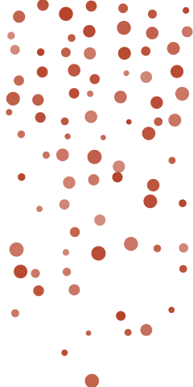

Dot scatter — the signature motif
From the villa's left-wall pattern. Top-dense, bottom-sparse.

Use once per page
— never twice.
Section corners, hero margins, footer accent
Animate one-by-one on first paint (30ms per dot)
Always terracotta-500, varying opacity 0.6–1.0
Never recolor to another brand color